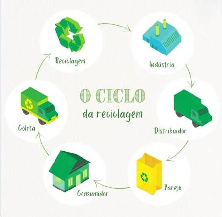

Juntos por uma escola mais sustentável
A EcoEscola apoia escolas e comunidades a reduzir o lixo e separar resíduos corretamente por meio de atividades educativas e pontos de coleta.

Sobre o projeto
O projeto incentiva a reciclagem como uma ação coletiva, prática e acompanhada por resultados.
Integrantes: Daniel de Araujo Felix e Elias Gonçalves da Silva.